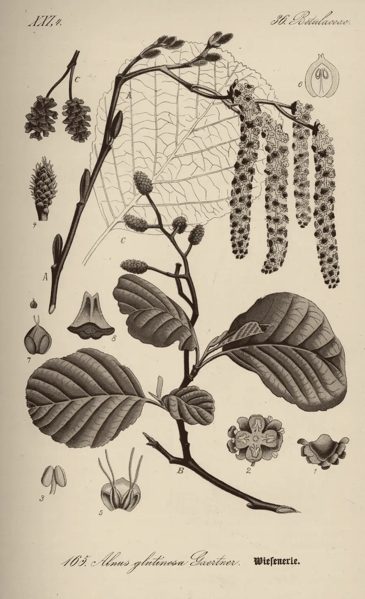
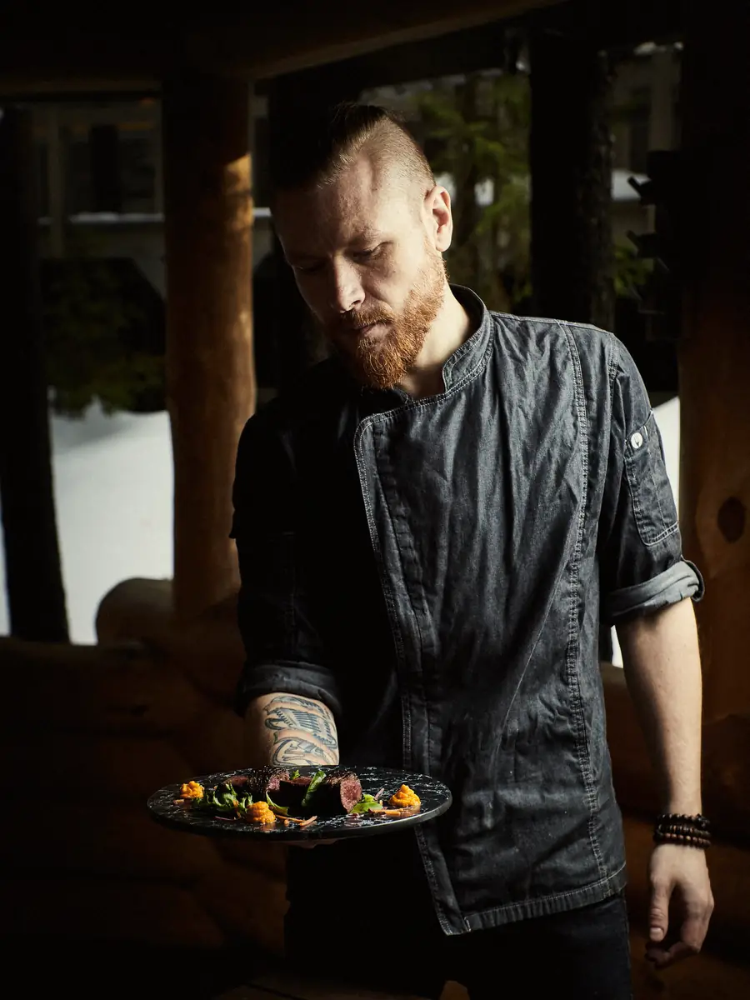
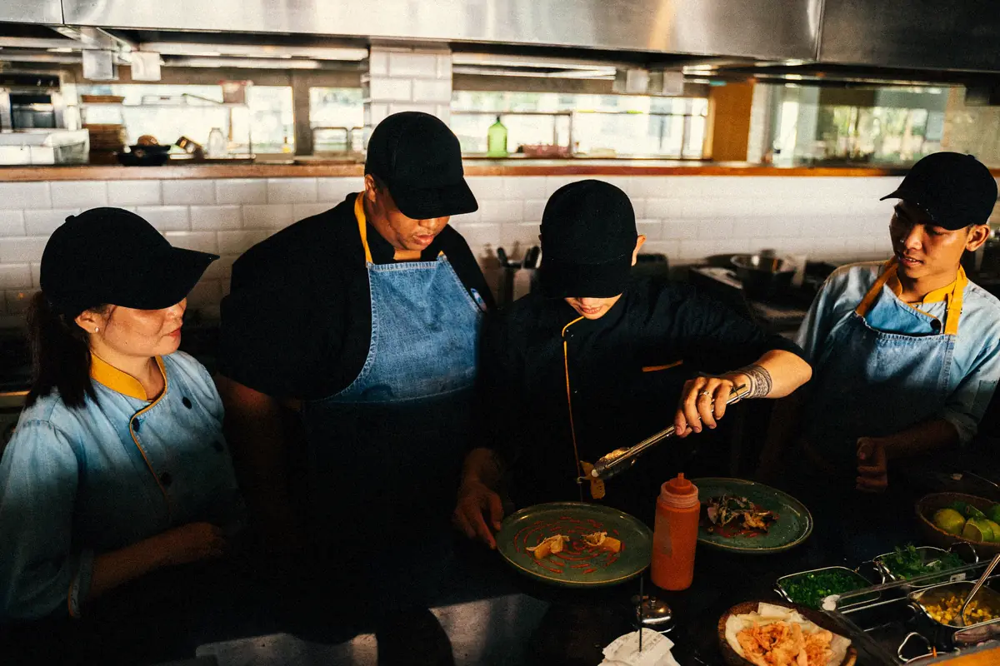
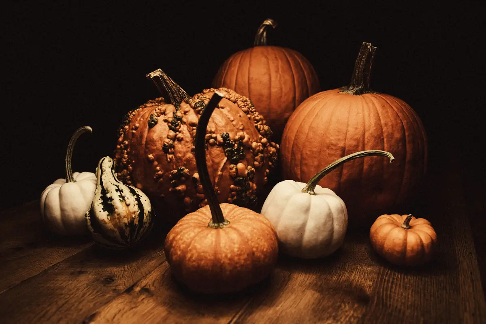

Огонь
Всё, что можно, готовим в печи и на углях. Огонь медленный, поэтому и блюда мы не торопим.
О ресторане
Мы готовим на живом огне и топим печь ольхой — деревом, на котором в России и Скандинавии веками коптили рыбу.

дерево, огонь и дым
У ольхи почти нет смолы, поэтому её дым мягкий и чуть сладкий: он не перебивает вкус, а обнимает его. На ольховой щепе коптят форель, на ольховых углях хорошо доходит мясо.
Свежий срез ольхи на воздухе за несколько минут краснеет до рыжего, будто дерево само помнит огонь. Этот цвет стал цветом «Ольхи» — он есть в нашем знаке, меню и на кителях поваров.
Газа на кухне нет. Утром печь разгорается под хлеб, днём в ней томятся щёки и щи, вечером работают гриль и угли.
во что мы верим
Всё, что можно, готовим в печи и на углях. Огонь медленный, поэтому и блюда мы не торопим.
Меню меняется четыре раза в год. Осенью — тыква, белые грибы и северная рыба, весной — черемша и молодая зелень.
Утка, сыр, рыба и корнеплоды — от хозяйств в трёх-четырёх часах езды от Москвы. Мы знаем каждого по имени.

шеф
«Огонь не терпит спешки. Мы просто даём продукту время»
Вырос в Вологде, учился у поваров, которые готовят только на дровах. Десять лет работал в ресторанах Москвы и Копенгагена, прежде чем открыть «Ольху».
Каждый день в 18:00 сам достаёт первый хлеб из печи — с этого начинается вечер.
команда
Повара, пекарь, кондитер, сомелье Илья Ветров и зал, который помнит, кто любит хлеб погорячее. Вечером вся кухня работает на глазах у гостей шеф-стола.

соседи

гости о нас
«Сели в семь, ушли за полночь. Хлеб из печи — отдельная причина вернуться»
«Взяли сет на годовщину. Щуку собирали прямо при нас, и это было лучше любого шоу»
«Редкое место, где тихо, тепло и пахнет дымом, а не кухней»
увидимся вечером
пример сайта
Это демонстрационный сайт студии «Вывеска». На настоящем сайте кнопка сразу ведёт гостя к администратору.